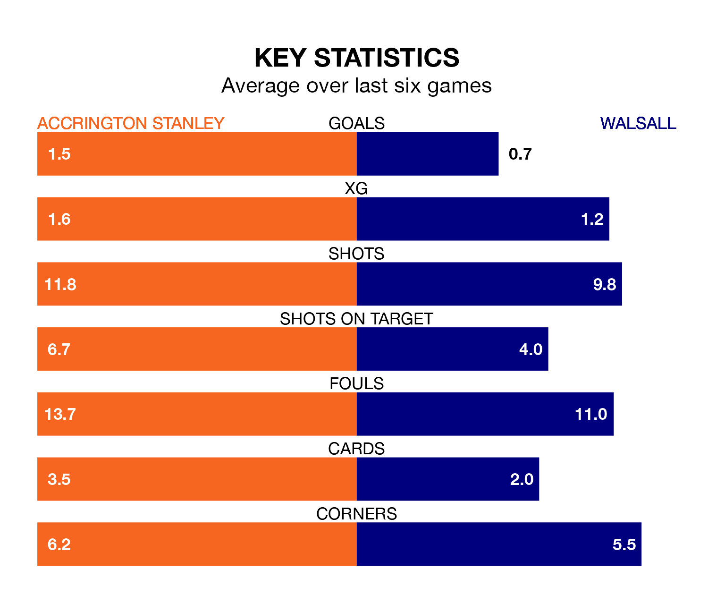

Accrington Stanley host Walsall on Saturday at the Wham Stadium in EFL League Two.
In their last league match, on December 16, Accrington drew with Crewe Alexandra 3-3 away, with goals from Benjamin Woods, Jack Nolan and Josh Woods.
Walsall won, 1-0 at home against Tranmere Rovers, with Jamille Matt scoring their goals.
With 27 goals in 21 games so far this season, Walsall are scoring at below the league average rate with 1.3 goals per game. And they are conceding at an average rate, letting in 32 goals at a rate of 1.5 per game.
Accrington, meanwhile, are average scorers, with 1.5 goals per game. They have also conceded 1.5 goals per game.
Stanley are in disappointing form in EFL League Two, with one win and two draws from their last six games.
With two wins and a draw over that period, the Saddlers's form is slightly better – they have taken seven points from 18, compared to the home team's five.
Accrington are ninth in the table after 22 games, of which they have won nine and drawn four, earning 31 points.
The visitors are seven places behind Accrington in 16th, with seven wins and six draws putting them on 27 points.
